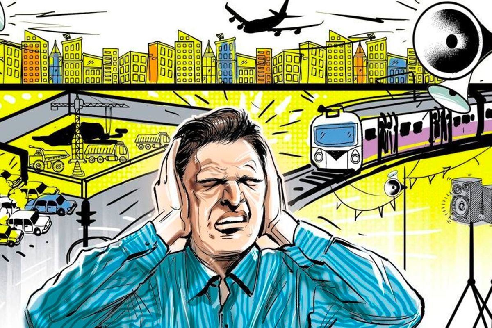

Noise can be defined as a sound that is loud or unpleasant to hear.
For example, sounds such as honking of vehicles, drilling,
scratching etc are unpleasant to hear and hence can be termed as
noise.
When noise is being sustainabily (continuously) produced, it is
referred to as sound produced.
Harmful effects of noise :

Irritation and loss of concentration
Sleep disturbance and stress (which can lead to high blood pressure);
Ear damage and loss of hearing (which may result from continuous
exposure to noise over a period of time).
Exposure to loud noise can damage the tiny hair cells in your ear that are responsible for converting sound waves into electrical signals that the brain interprets as sound. Once these hair cells are damaged, they can no longer send signals to the brain, and tinnitus results.
Measures for reducing noise :
Restricting the use of loud equipment.
Using Damping and lagging for reducing noise transmission through building structures.
Use of silencers in engines.
Avoid Using Noisy Equipment.
Raising awareness.
Use of barriers or enclosures by workers to protect from noise.